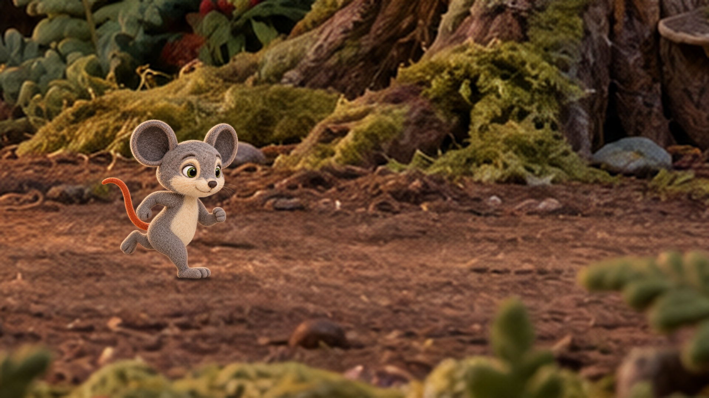

 A — approved originalC — focused integration
A — approved originalC — focused integrationCompare the approved composite with two finishing candidates. Milo’s placement and scale stay fixed. The approved keyframe is unchanged.

A — approved originalC — focused integrationB: modest brightness shaping, slight sharpness reduction and a small supporting-foot shadow. C: generated lighting/material integration bounded by the original character alpha and a small foot-contact region. The central face is restored from the original; background changes from the raw generated output are excluded.
The masks constrain where edits can appear; they do not prove every interior anatomical feature is identical. C changes some wool and foot shading. Compare especially the ear edges, belly, trailing leg and planted foot. Neither candidate is adopted or technically approved.